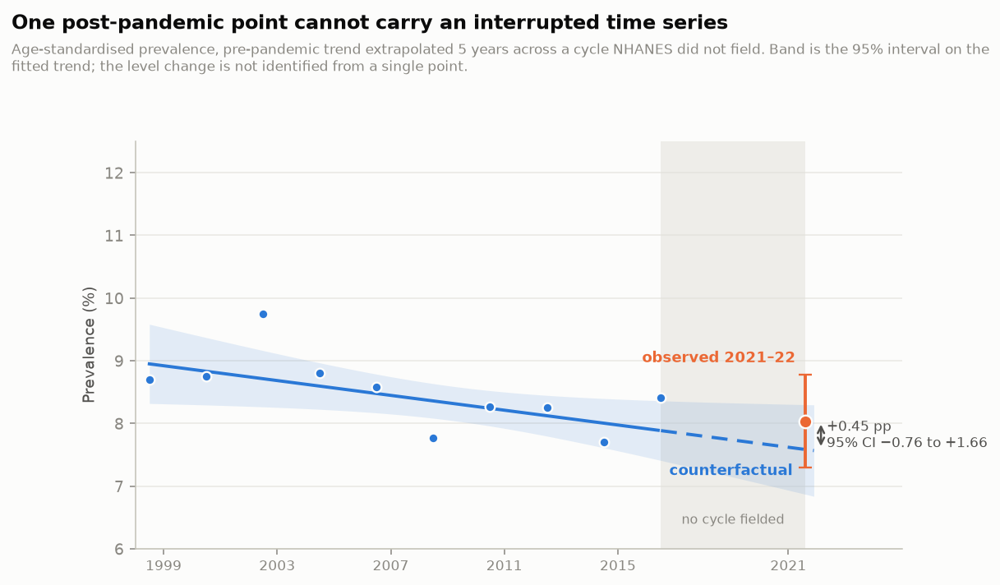
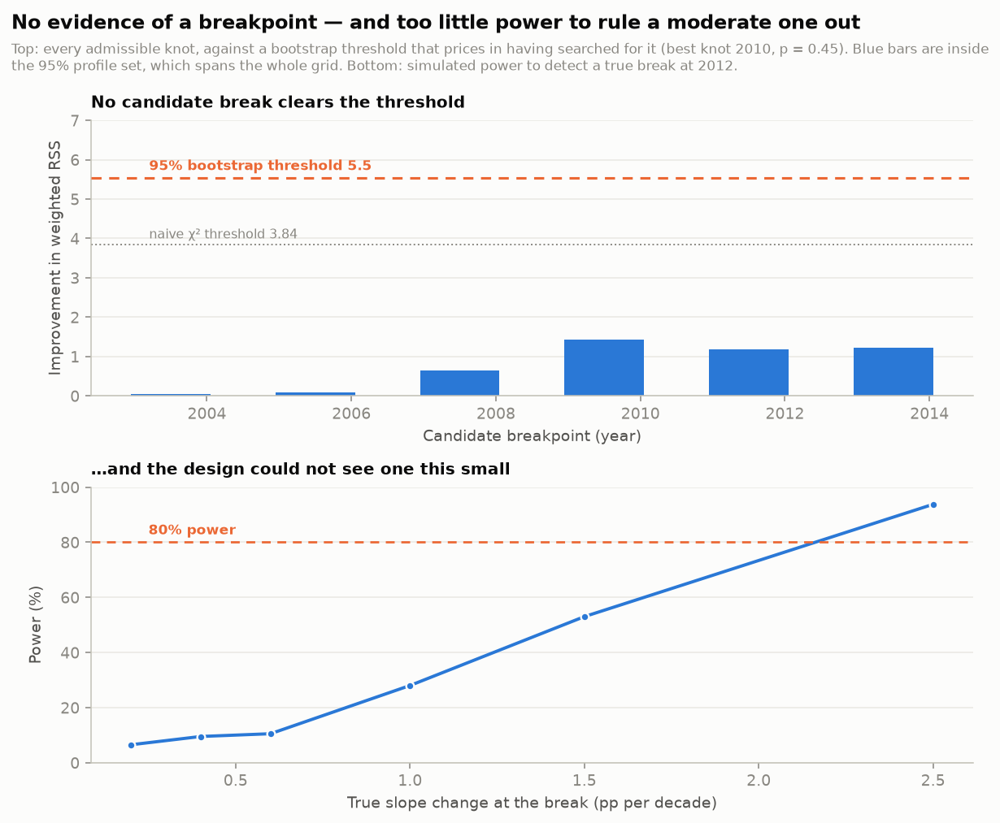

Whether the pandemic bent the trend, and what a single post-pandemic observation can and cannot establish.
3
Whether the pandemic bent the trend
Quasi-experimentalCounterfactual extrapolationResult: no detectable change
Observed prevalence in 2021–2022 sits +0.45 pp above what the
pre-pandemic trend predicts. The 95% interval runs -0.76 to
+1.66 points and contains zero. The honest reading is that this design,
on this data, cannot detect a change of the size one might expect.
Observed 2021–22
8.03%
SE 0.38 pp
Counterfactual
7.58%
SE 0.36 pp
Difference
+0.45 pp
z = 0.86
Post-period cycles
1
5-year extrapolation

The gap in the horizontal axis is the analytical problem. NHANES
suspended field operations, so no 2019–2020 cycle exists and the counterfactual must be
carried 5 years beyond the last observation. With one point
after the interruption, a level change is estimable but a change in slope is not identified,
so none is reported.
What an interrupted time series normally does, and what is missing here
The design behind this figure is simple to state: fit the trend that held
before an event, project it forward as the world that would have happened without the event,
and read the difference against the world that did. Its strength is that it needs no control
group — the pre-period is the control. Its weakness is that everything depends on the
projected line being right, and a projection is only as good as the distance it has to travel
and the number of points on the far side.
Both go against this analysis. NHANES did not field a 2019–2020 cycle, so
the projection spans 5 years rather than the usual two, and the
single post-interruption cycle means a change in level can be estimated but a change in
trajectory cannot be separated from it at all.
The subtle failure this design invites. Design-based standard errors describe
sampling error only — how much the estimate would move if the same population were sampled
again. They do not describe how much a national prevalence genuinely moves between cycles.
Building the counterfactual interval from sampling error alone produces a band that is too
narrow, and a difference that clears it looks like a pandemic effect when it is an artefact
of the model. The interval here therefore carries a dispersion term estimated from the
pre-pandemic residuals rather than assumed. It came out at 0.86 — the series moves slightly
less than sampling error alone predicts — and is floored at 1, so the band is never narrower
than nominal but is not inflated either. The null survives both ways: un-floored the interval
is -0.72 to +1.62 points, floored it is -0.76 to +1.66, and both contain zero.
Who is in the one post-pandemic cycle
The whole counterfactual rests on a single observation, so it matters who
that observation is made of — and for a while this section reported a problem that was
not there. Every NHANES analysis takes the weight of its most restrictive component. The
outcome here is five questions asked in the household interview, so the interview weight is
the one that matches it; the examination weight was used originally, and it silently
restricts the sample to people who also attended the mobile examination centre.
That choice mattered most exactly where the analysis is weakest. Under the
examination weight the post-pandemic cycle lost
22.3% of its age-eligible respondents against
2.6–8.9%
elsewhere, and that fourfold change in examination coverage was reported here as a competing
explanation for the whole gap. Under the interview weight no cycle loses more than
0.05%, and nobody at all lacks a weight. The competing explanation
was an artefact of the wrong weight, and it is withdrawn rather than quietly dropped.
Part 1 and Part 2 — participant flow by cycle, interview weight
Cycle
Age-eligible (20+)
No weight
Analysed
Lost
1999-2000
4,880
0
4,880
0.0%
2001-2002
5,411
0
5,410
0.0%
2003-2004
5,041
0
5,039
0.0%
2005-2006
4,979
0
4,979
0.0%
2007-2008
5,935
0
5,934
0.0%
2009-2010
6,218
0
6,216
0.0%
2011-2012
5,560
0
5,557
0.1%
2013-2014
5,769
0
5,768
0.0%
2015-2016
5,719
0
5,719
0.0%
2017-2018
5,569
0
5,568
0.0%
Aug 2021–Aug 2023
7,809
0
7,807
0.0%
What remains a competing explanation is the cycle itself, and it comes from CDC.
NCHS names this cycle August 2021 – August 2023, states that it “is
based on an updated sample design and modified interview as well as examination
procedures”, and urges analysts to proceed with caution before combining it with
earlier cycles for trend analysis, given the fifteen months in which nothing was observed.
A changed sample design and a changed instrument are not things a weight corrects. It is
why this section reports a deviation from an extrapolated trend and not a pandemic effect.
The single post-disruption observation remains an unavoidable limitation. What
follows documents its origin, not a way around it: the repair for a one-observation
contrast is a second observation, and there is not one to be had — by anyone. August 2021 – August 2023 is the most recent
NHANES cycle with released public-use files; NCHS announced its first wave in October
2024. The field period that would have supplied a point between them — 2019 to March
2020 — was cut short when operations were suspended, and the 18 of 30 primary
sampling units that were completed are not nationally representative on their own, which
is why NCHS distributes them merged into 2017-2018 as a single
2017 – March 2020 pre-pandemic file rather than as a cycle. That file
cannot extend this series: it overlaps 2017-2018 and reassigns its sampling units to the
2015-2018 design strata, so it is a substitute for a point already here, not an addition.
Collection for the next cycle began in 2025, and NCHS releases a cycle only after its
collection is complete.
The same boundary sets the cohort. The public-use Linked Mortality File covers NHANES
1999-2018 with follow-up through 31 December 2019, which is why Part 3 ends there and
why its follow-up is entirely pre-pandemic. Neither cutoff is a choice made here
— and knowing where a boundary comes from does not move it. Section 3's estimate
is still a deviation from an extrapolation resting on one observation, and it is still
the weakest inference in this report.
Letting the data choose the breakpoint — within the window it can reach
This test cannot address the pandemic, and is not offered as if it could. Three
points are needed on each side of a knot, so with eleven observations the last candidate
sits eight years before 2020. Simulated power against a true break at the pandemic is
0.057 at a slope change of one point per decade — indistinguishable from the
test’s own five per cent size. What follows is a statement about breaks inside the
pre-pandemic series and carries no information about a pandemic break either way.
Within that window, placing a break anywhere is still an assumption
worth testing. A joinpoint model relaxes it: fit a continuous piecewise line, let the knot fall wherever it best fits, and test
whether any knot earns its parameter. Because each point carries a known design-based variance,
the weighted residual sum of squares is an exact goodness-of-fit statistic rather than an
estimated one — and it says the straight line already fits. The series scatters no more
than the sampling errors alone predict, so there is no unexplained structure for a break to
explain.

No break is detectable, and none would be unless it were very large.
Significance is assessed by parametric bootstrap rather than a chi-square test at the fitted
knot: searching over the breakpoint inflates the null, so the honest threshold is 5.5 rather
than 3.84. The 95% profile set for the knot spans every candidate year, meaning the data
cannot localise a break at all.
Power to detect a true slope change at 2011
True change in slope
Power
+0.2 pp / decade
6%
+0.4 pp / decade
10%
+0.6 pp / decade
10%
+1.0 pp / decade
28%
+1.5 pp / decade
53%
+2.5 pp / decade
94%
This is a limit of the design, not evidence of absence. A reversal from the observed
decline to a flat trend — a slope change of 0.6 points per
decade — would be detected about 10% of the time. Only a
change of roughly 2.5 points per decade — large for a series that moves
between 7.7% and 9.7% — would be caught reliably. The correct conclusion is that eleven biennial estimates cannot
settle whether the trend bent, not that it did not.
The choiceUse a questionnaire-based outcome rather than measured blood pressure or lipids.
What it buysSidesteps the instrument and assay changes accumulated across 11 cycles, which would otherwise be indistinguishable from a pandemic effect.
What it costsOnly captures diagnosed disease, which is slow-moving — precisely the outcome least likely to register a short shock.
The choiceWeight the series with the interview weight, not the examination weight.
What it buysIt is the weight the outcome is entitled to — five questions asked in the household interview — and it removes the 22% post-pandemic loss that the examination weight introduced and that was reported here as a competing explanation.
What it costsThe series is no longer directly comparable with the examination-weighted analyses in §5 and §6, and n rises from 58,454 to 62,877, so every published figure moved.
The choiceEstimate dispersion from the residuals rather than assume the design-based errors are the whole story.
What it buysTurns an assumption into a measured quantity: it came out at 0.86, so the straight line already explains the series as well as sampling error allows.
What it costsFloored at 1 so the band is never narrower than nominal, which is a conservative choice made before the answer was known, not after.
The choiceReport a level difference only, and state that the slope change is unidentified.
What it buysNothing is claimed that one post-period observation cannot support.
What it costsThe most interesting question — whether the trajectory changed — is left open.
The choiceLet a joinpoint model nominate the breakpoint, rather than assuming it sits at the pandemic.
What it buysTurns the framing into a testable claim. It is not supported: no candidate knot clears the bootstrap threshold, and the profile set for its location spans the whole series.
What it costsThe same test has well under half the power needed to catch a break the size of the trend itself, so it cannot be reported as evidence that none exists.
The choiceAssess significance by parametric bootstrap instead of a chi-square test at the fitted knot.
What it buysPrices in the fact that the breakpoint was chosen by searching — the honest 95% threshold is 5.5, not the nominal 3.84.
What it costsRoughly fifty per cent harder to reach significance than the test most software would report by default.
The choiceFit the pre-period on the standardised series, not the crude one.
What it buysThe counterfactual is about disease, not about the population continuing to age.
What it costsInherits every standardisation choice from §2, including the 20+ base.
What is still needed. Extending this to measured risk factors — blood pressure,
lipids, glycaemia, where a real pandemic effect is far more likely to show — requires
bridging the instrument and assay changes across the series first. Without that bridge, a
change of blood-pressure device would be attributed to the pandemic.
CardioTrace · NHANES 1999–2022 · NCHS Linked Mortality File Zekun Song · Computer Science & Data Science, University of TorontoNext → · GitHubResumeLinkedInBack to top ↑